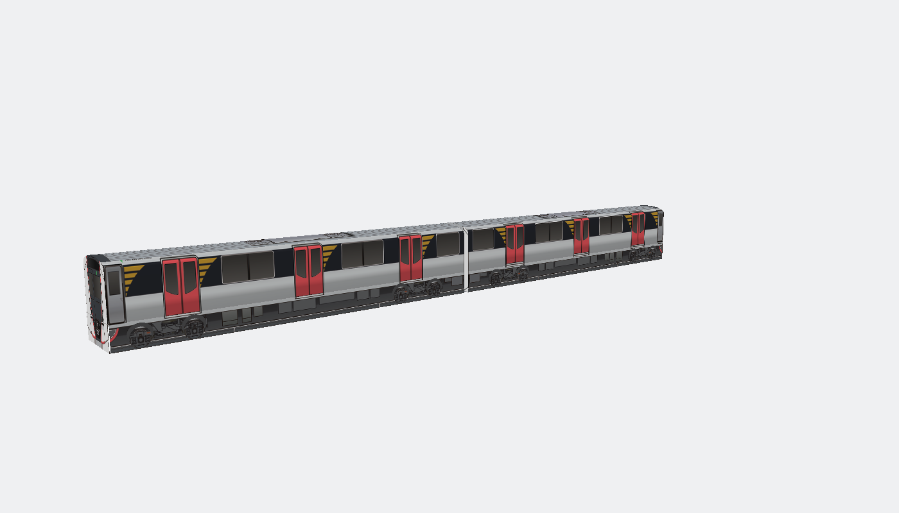
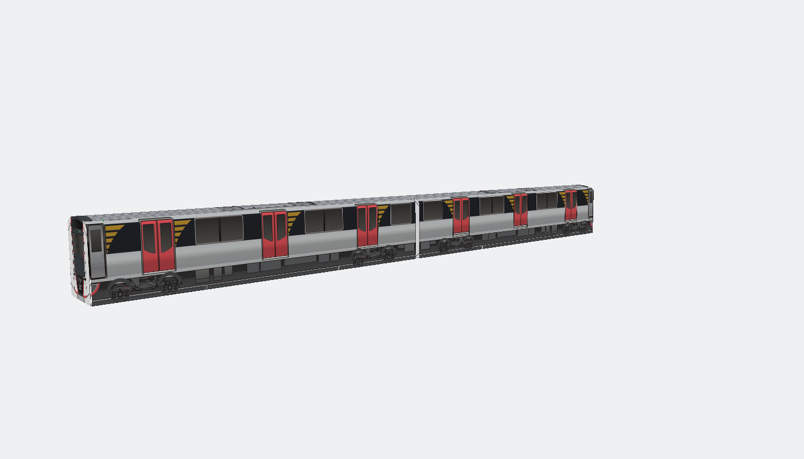
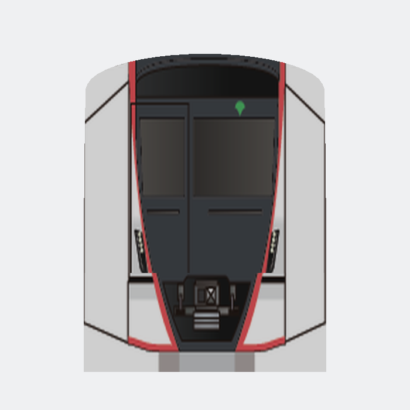
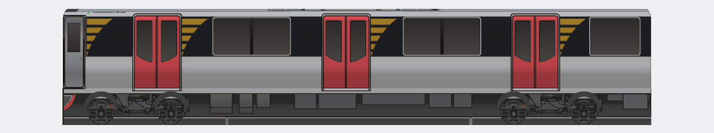
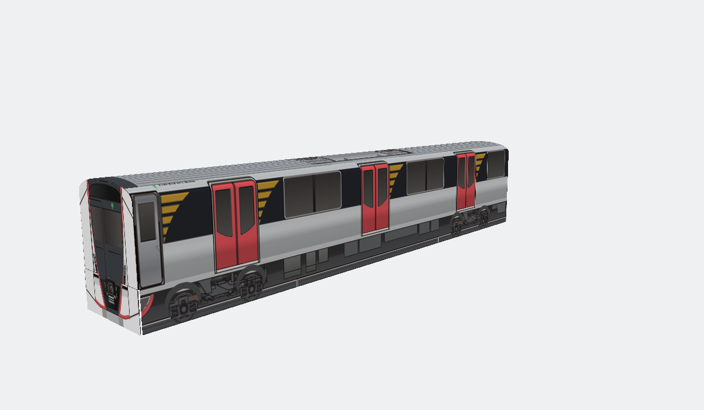
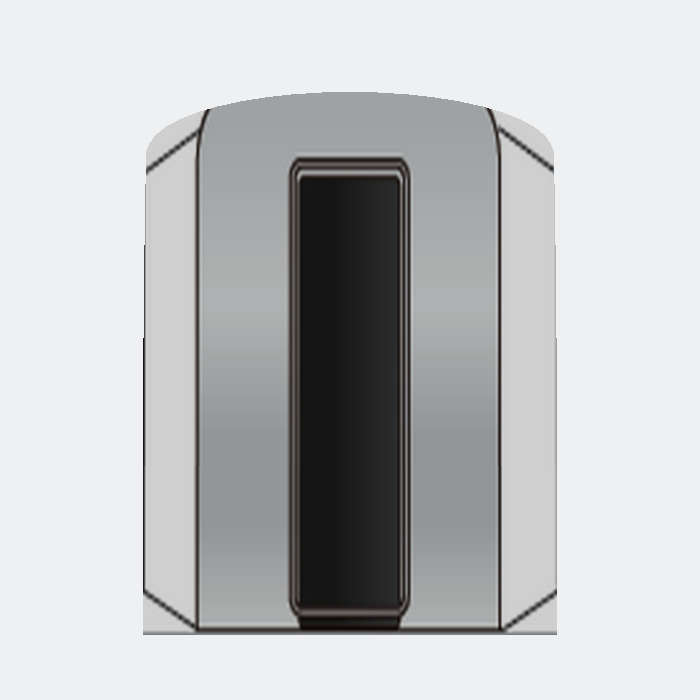
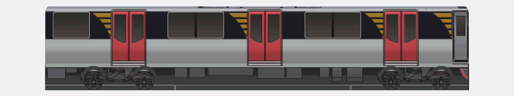
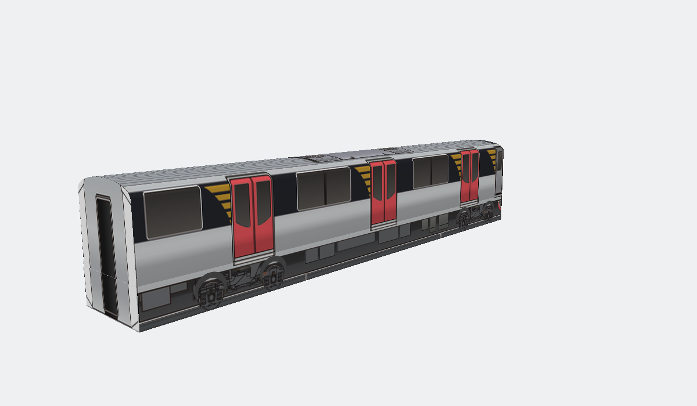

都営5500形 toei-5500 — 单独审核
车型：東京都交通局 5500形（浅草線），J-TREC Sustina S13，2018 年投入，现役 27 编组 × 8 辆
本模型：2 辆子集 [5501-1 M1c][5501-8 M8c]（两端司机室向外、中间贯通端相对；缺 6 辆中间车，图纸只有单张净片）
推送：models-pipeline 提交 d521e0f，index 650。MC 2026-11-27 00:23 要求单独一页仔细看。
整列（侧视图）

斜视角

三维形态图

单车细看 — 1 号车（5501-1 M1c，司机端）



单车细看 — 2 号车（5501-8 M8c，司机端）



实车对照：8 辆编组 5501-1 M1c－5501-2 M2－5501-3 M3－5501-4 T4－5501-5 T5－5501-6 M6－5501-7 M7－5501-8 M8c；3/6 号车各 2 架单臂弓（端车无弓）；全长 18,000 mm、宽 2,760 mm、高 4,036 mm；每侧 3 对门。返回 (B) 批审核页。